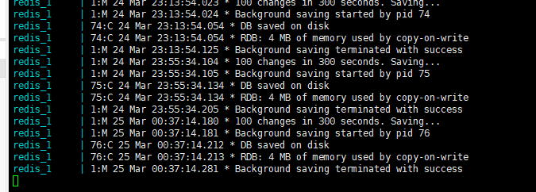

Hello ，I am new to redash and docker . I installing the redash with code
" docker-compose -f docker-compose.yml run --rm server create_db
docker-compose -f docker-compose.yml up --build ".
However ,the installing lasts two days. And it is setting up the redis ，I don’t konw what to do next .

Thank you very much! I have installed the redash successfully， But, i can not access the redash from Browser . And i find my pc can connect the server with code ‘telnet IP 5000’ .
Looks like port 80 is the standard port you should be able to connect to after the script runs, although port 5000 should work too.
One command which could be helpful, is docker-compose ps. That should show what’s running, with some basic status info. eg this is what’s running on my CentOS 7 desktop:
$ /usr/local/bin/docker-compose ps
Name Command State Ports
------------------------------------------------------------------------------------------------
redash_adhoc_worker_1 /app/bin/docker-entrypoint ... Up 5000/tcp
redash_nginx_1 nginx -g daemon off; Up 443/tcp, 0.0.0.0:80->80/tcp
redash_postgres_1 docker-entrypoint.sh postgres Up 5432/tcp
redash_redis_1 docker-entrypoint.sh redis ... Up 6379/tcp
redash_scheduled_worker_1 /app/bin/docker-entrypoint ... Up 5000/tcp
redash_scheduler_1 /app/bin/docker-entrypoint ... Up 5000/tcp
redash_server_1 /app/bin/docker-entrypoint ... Up 0.0.0.0:5000->5000/tcp
Note the 2nd entry redash_nginx_1?
That’s the one you connect to on port 80 via your browser, and/or telnet if you want to test the connection.
If the docker-compose command shows things running ok, but you can’t connect to it, then it’s probably just the default firewall configuration on your CentOS 7 box blocking things. If you’re using firewalld, then port 80 can be opened with:
It works! I have connected the Redash ,
In the past few days, I have not only solved the problem, but also learned a lot of knowledge.Thank you very much!